People
전산화학연구실 구성원
Principal Investigator
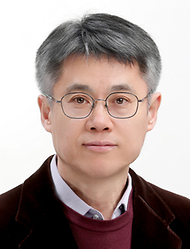
황현석 Hyonseok Hwang
교수, 강원대학교 화학과 · hhwang@kangwon.ac.kr · 033-250-8497
학력
- 1998.09 – 2003.08 · Ph.D. in Chemistry, The University of Texas at Austin (지도교수: Prof. Peter J. Rossky)
- 1995.03 – 1997.02 · M.S. in Chemistry, 서울대학교 (지도교수: 신국조)
- 1989.03 – 1995.02 · B.S. in Chemistry, 서울대학교
경력
- 2007.03 – 현재 · 강원대학교 화학과 전임강사·조교수·부교수·교수
- 2008.07 – 2008.08 · Visiting Researcher, Northwestern University
- 2003.09 – 2007.04 · Postdoctoral Researcher, Northwestern University (Prof. George C. Schatz, Prof. Mark A. Ratner)
- 1997.05 – 1998.05 · 연구원, 서울대학교 기초과학연구원
Members
Research Professor
이
이지혜연구교수
Postdoctoral Fellows
김
김남호박사후연구원
Graduate Students
최
최인혁박사과정
Undergraduate Students
조
조소현4학년
문
문혜원4학년
이
이정훈4학년
김
김예은3학년
배
배준형3학년
Alumni
김경옥학부 ’08–’10
김민기학부 ’08–’10
강서정학부 ’08–’10
김민경학부 ’09–’11
서주희학부 ’09–’11
이지혜박사 ’10–’12
최규민석사 ’11–’13
서용일학부 ’10–’12, 석사 ’12–’14
이효인학부 ’10–’12
송연호학부 ’11–’13, 석사 ’13–’15, 박사 ’17–’22
허번영학부 ’11–’13
서희원학부 ’11–’13
진희정학부 ’12–’14
원난영학부 ’12–’14
최형수학부 ’12–’15
남민우학부 ’13–’15
정유진학부 ’13–’15
이아영석사 ’14–’16
정구환학부 ’14–’16
변민현학부 ’14–’17
여혜진학부 ’15–’17
정지은학부 ’15–’17
진효민학부 ’15–’17
경윤경학부 ’16–’18
박다희학부 ’16–’18
주찬양학부 ’16–’18
권용범석사 ’17–’18
노민지학부 ’17–’19
유지현학부 ’17–’19
최인혁학부 ’18–’20, 석사 ’20–’22
이철학부 ’19–’21
허성준학부 ’19–’21
김준성학부 ’20–’22
윤종찬학부 ’21–’23, 석사 ’23-’25
임성준학부 ’21–’23, 석사 ’23-’25
유진혁학부 ’22–’23
김수아학부 ’22–’24
강명진학부 ’22–’24
박지환학부 ’22–’24
이연호학부 ’23–’25
Photos
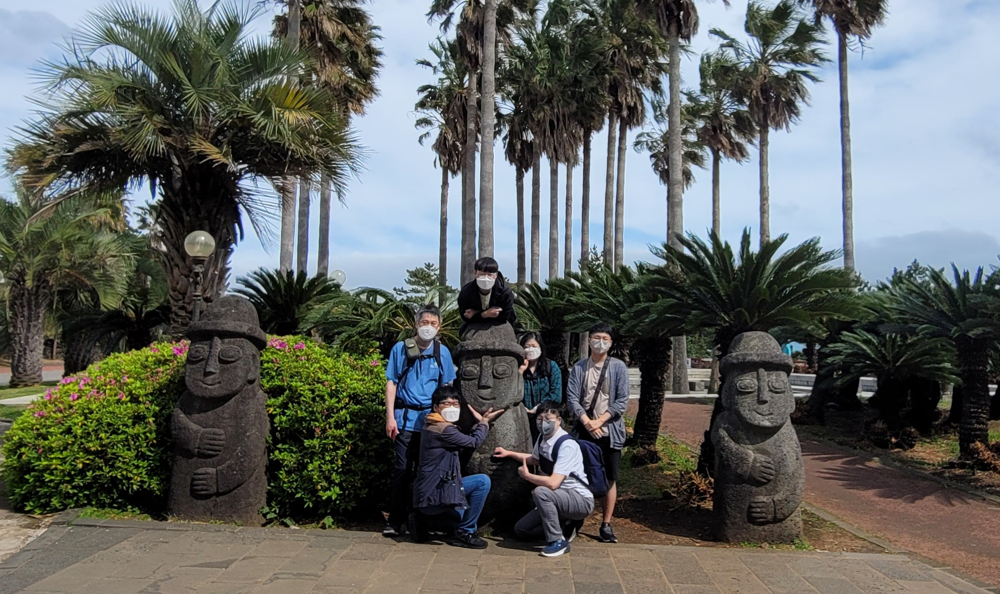
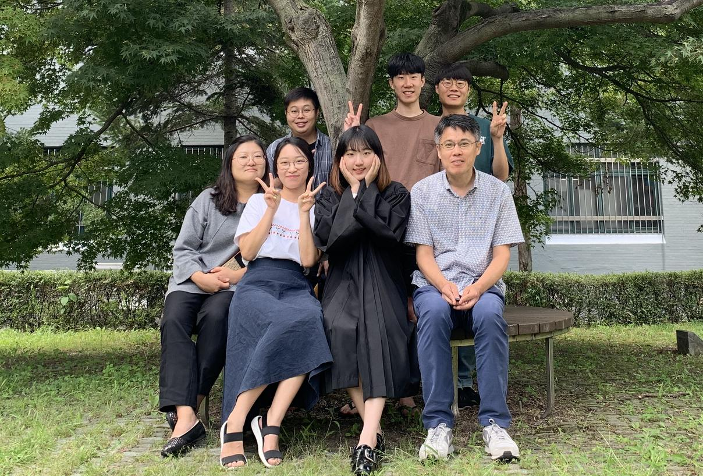
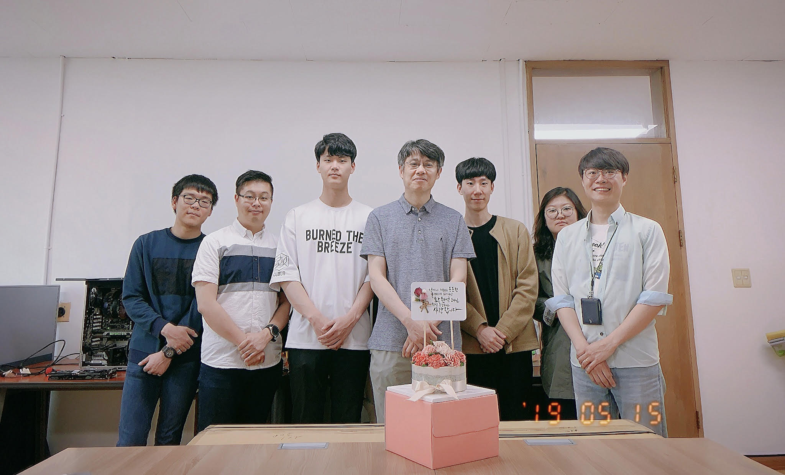
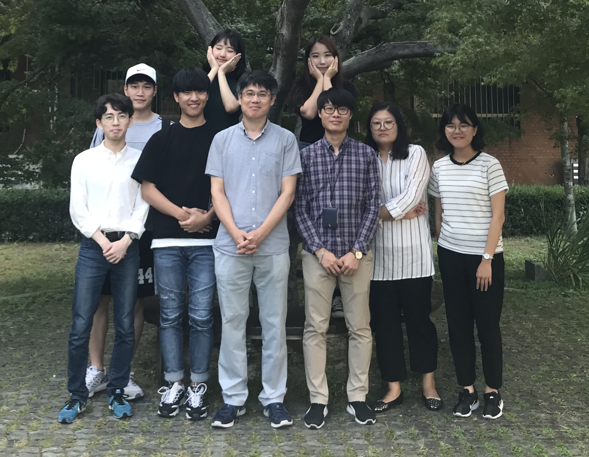
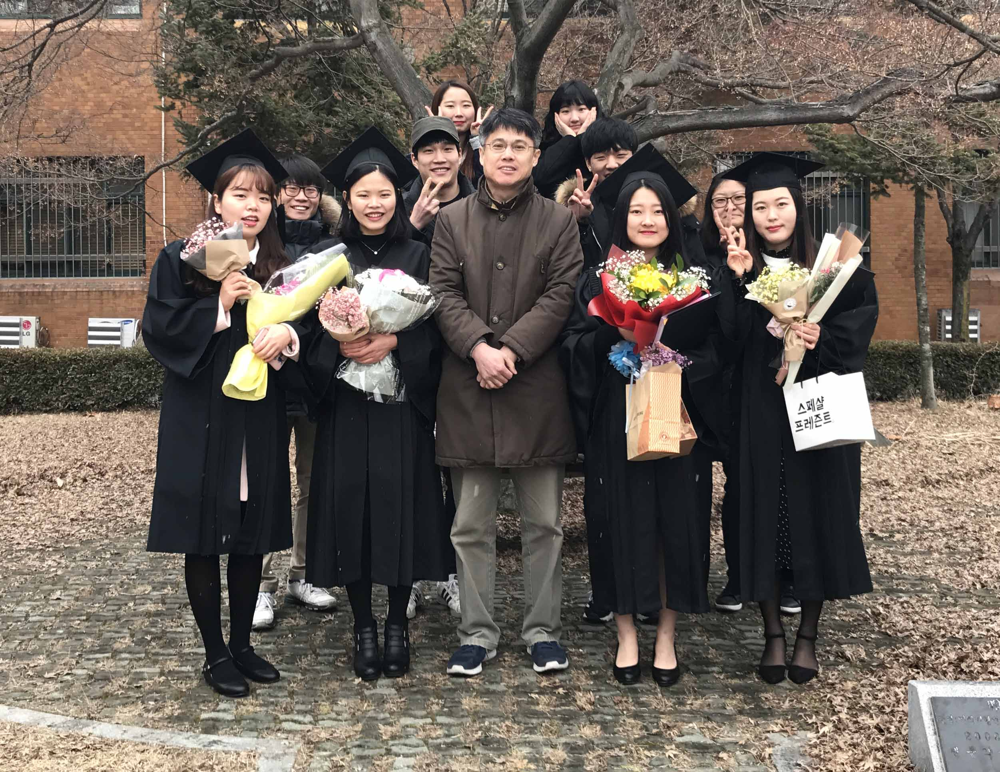
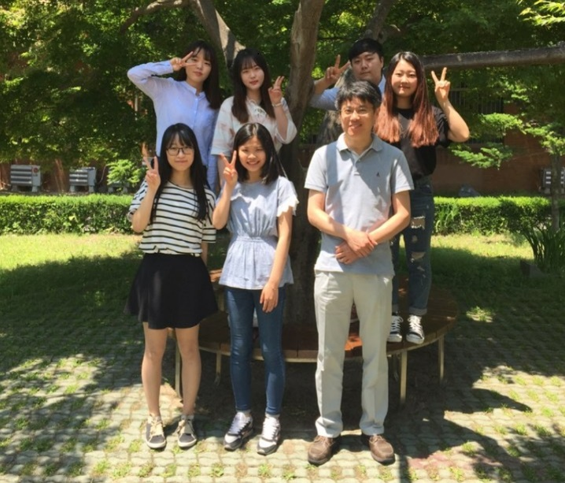
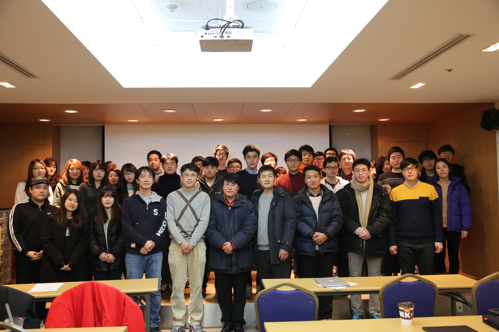
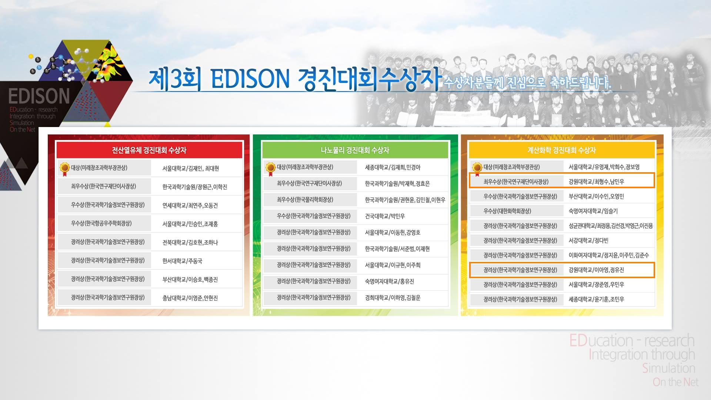
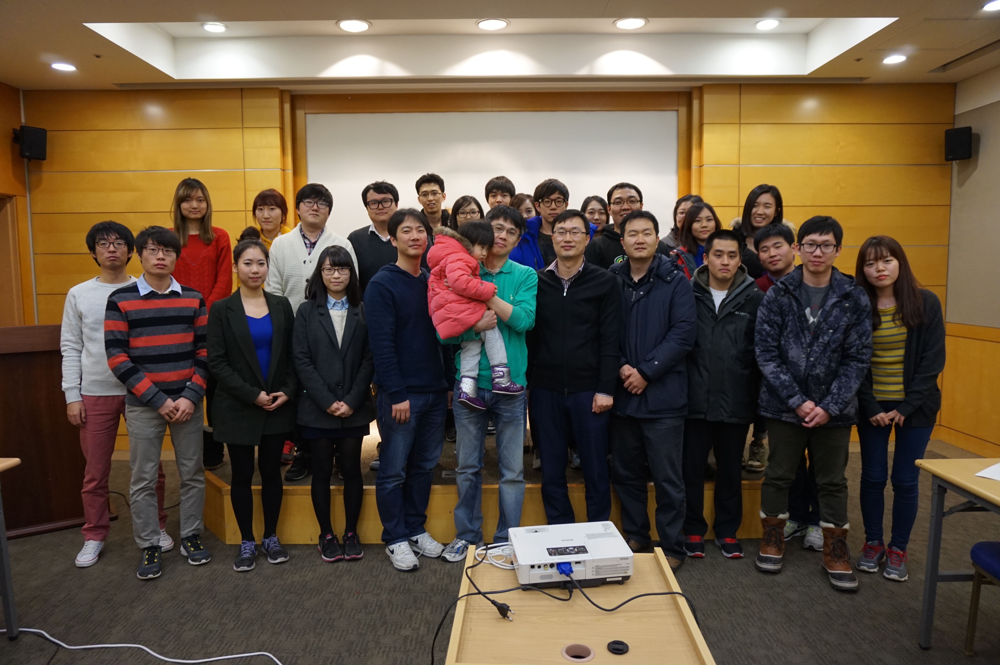
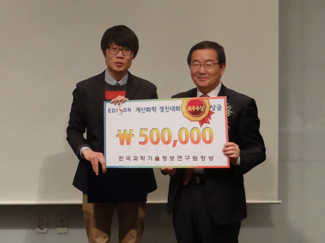
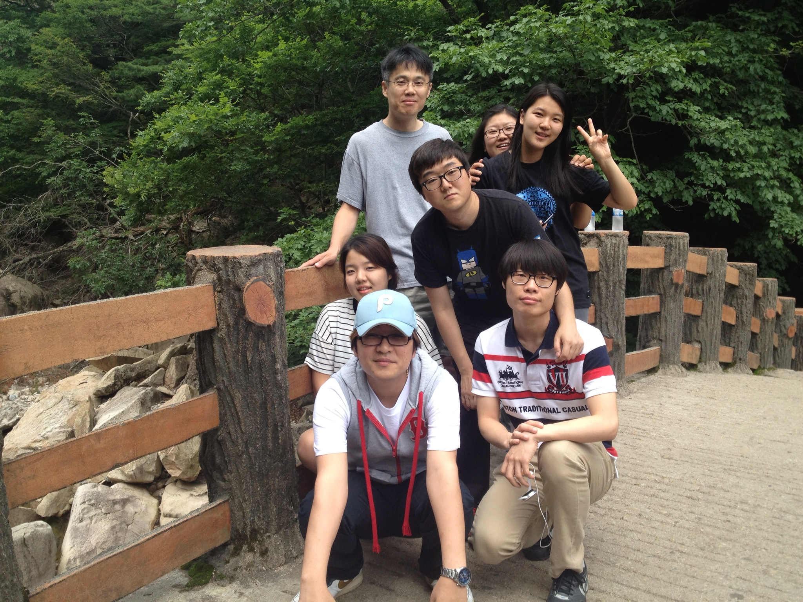
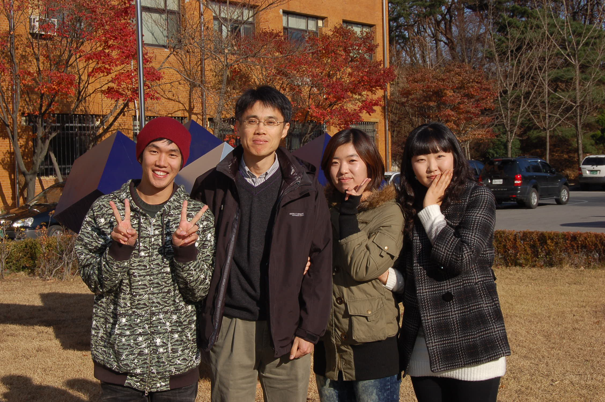
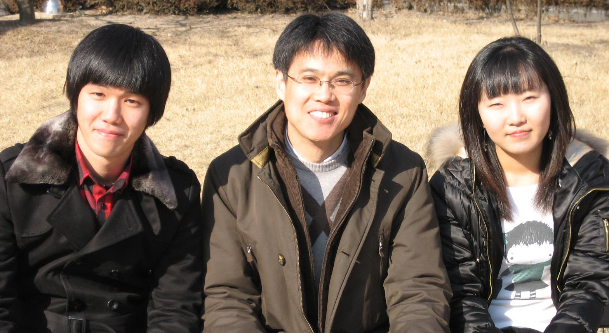